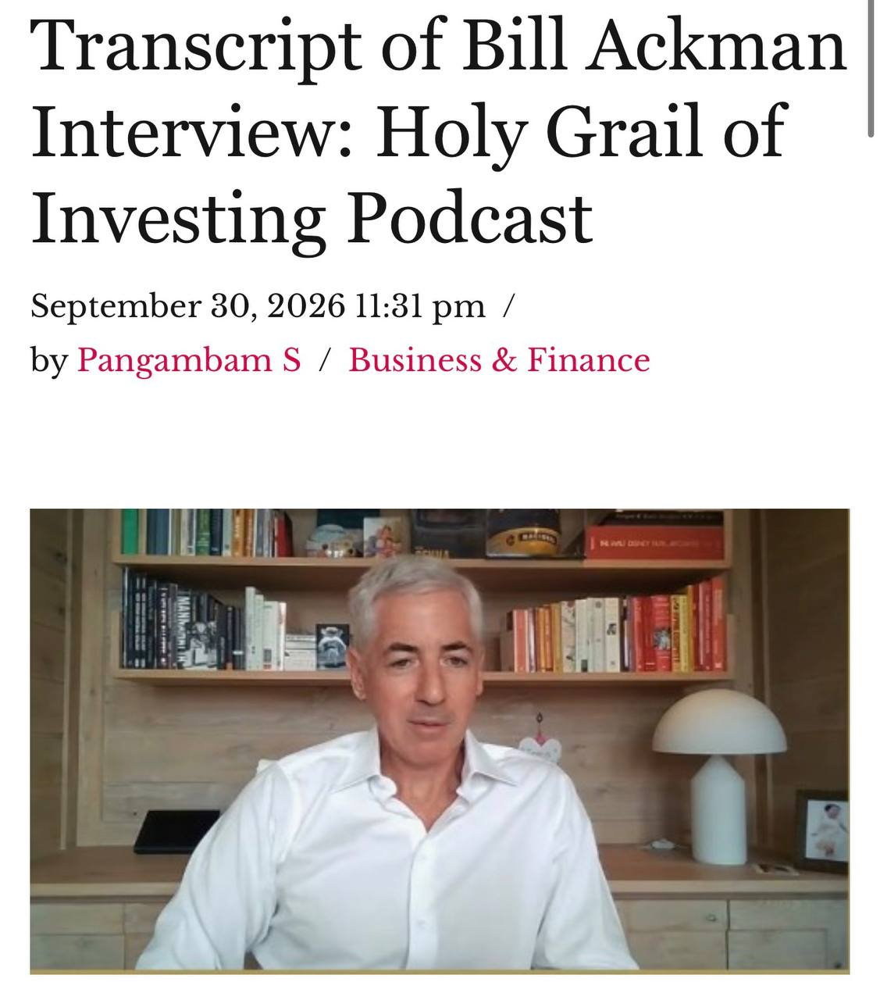

過去 26 小時共 4 則：2 則是 EP704 集數推播與 NordVPN 業配；實質內容只有 1 組（#6474＋#6475），是轉貼 Bill Ackman 上 Tony Robbins《Holy Grail of Investing》Podcast 的一段談話，主題是「市場短期化、波動不連續，長期資金可以低吸」。
高槓桿資金越來越多的世界裡可以考慮的趁你病要你命的低吸策略，有意思
“ 對，我認為這帶來了越來越多的……嗯，主要帶來了兩個變化，其中一個就是市場越來越短期化。現在有太多資料可以讓投資人即時反應。當今避險基金界一些比較成功的策略，就是吸收大量量化資料，然後做非常短期的押注：這家公司財報會達標，還是不如預期？諸如此類。
想想 Millennium、Citadel 這類公司，它們很多資金都集中在一個個獨立的投資小組，也就是所謂的「pods」。這些小組的報酬激勵具有很強的槓桿效果，但容許承擔的風險又非常有限。就像我常說的，誘因驅動人類的一切行為。
這也帶出了我認為市場上兩股已經發生根本變化的力量。跟十年前相比是如此，跟二十年前相比，就更明顯了。
第一股力量是指數化投資，對吧？越來越多人乾脆認輸了，心想：「我就買指數吧。」這個做法到目前為止確實很成功。問題是，它會永遠有效嗎？
現在，美國每家企業大約四分之一的股權，是由 Vanguard、State Street 和 Northern Trust 這幾家公司合計持有的。這等於把一部分流通籌碼從市場中抽走了，對吧？當一家上市公司實際在市場上流通的籌碼變少，邊際買方與賣方對股價的影響就會更大。
今天的邊際買方與賣方，就是 Citadel 或 Millennium 這類機構，因為它們是規模非常大的市場參與者。它們使用大量槓桿，多空部位加總的總曝險規模非常龐大，而且操作越來越短期。
當然，另一個重要參與者是散戶，而且規模非常大。隨著這類當日到期選擇權的出現，散戶交易也變得更加投機。
所以，我認為這些力量會造成巨大的波動。IBM 的表現讓市場失望，股價就跌了 25%。對一家規模相當大的公司來說，這是非常大的跌幅。以前這種事情非常、非常罕見。
回想我剛入行的時候，大型公司股價出現這種程度的下跌，我只能想到一個例子：Philip Morris 第一次在重大菸草訴訟中敗訴時，股價跌了 20%。但那是極其特殊的事件。現在，我會說幾乎每一季，都有某家規模相當大的公司，股價出現劇烈波動。
我認為，這為能夠採取長期觀點的投資人創造了機會。因為偶爾會有一家真正高品質的企業，業績令人失望，或發生其他狀況。沒錯，那會影響當季表現。但只要你相信這不會改變企業的長期發展軌跡，它就會成為一個值得考慮的買進機會。
現在的市場，流動性確實更高了，但價格走勢也出現更多「不連續」的情況：一檔股票可能一夜之間跌掉 25%，而每股 100 美元到 75 美元之間，根本沒有可供成交的流動性。
這就是為什麼，擁有穩定、長期的資金基礎很重要。你可以買進，而不必在意這檔股票到了 12 月 31 日會在哪個價位。
今天大多數投資人都非常短視，因為他們的報酬制度就是這樣設計的，或者他們的風險管理規則就是如此，又或者他們是在年底「結算領錢」。
所以，除非他們有把握股價到了 12 月 31 日會更高，否則就不會投資這家公司。有趣的是，這反而創造了機會。
想像有一家企業，你知道到了下一年的 12 月 31 日，它的價值會變成現在的兩倍；但你今年不能持有它，因為它今年會基於各種原因下跌。
對於不必遵守同一套遊戲規則的投資人來說，這就創造了一個相當有吸引力的機會。”
https://singjupost.com/transcript-of-bill-ackman-interview-holy-grail-of-investing-podcast/

#6475 圖片：The Singju Post 文章標題截圖「Transcript of Bill Ackman Interview: Holy Grail of Investing Podcast」，2026 年 9 月 30 日發布，附 Ackman 受訪畫面。
講解
出處：這段是 Pershing Square 創辦人 Bill Ackman 在 Tony Robbins 與 Christopher Zook 主持的 Podcast《The Holy Grail of Investing》受訪內容（逐字稿頁註明節目約 2026 年 9 月 8 日首播），貼文是英文逐字稿的中譯，對照原文大意一致。開頭一句「趁你病要你命的低吸策略」是股癌自己的評語，不是 Ackman 的話。
Pod 是什麼：Millennium、Citadel 這類「多經理人平台」把資金切給數百個獨立小組（pod），每組有嚴格的停損與回撤上限（例如虧到一定比例就減資或解散），獲利則分成很高。平台再用槓桿放大整體部位。結果是每個 pod 都偏好短線、財報前後的事件押注，一旦某檔股票財報不如預期，大家會在風控規則下同時砍倉，造成瞬間踩踏。
被動化讓流通籌碼變少：Ackman 的邏輯是，指數基金只照權重持有、不太交易，等於把一部分股票鎖起來；真正在邊際決定價格的就剩高槓桿短線機構與散戶（含當日到期選擇權 0DTE），所以價格容易出現「跳空」——從 100 直接跳到 75，中間沒有成交量可以讓你出場。
IBM 例子查證：IBM 確實在 2026 年 7 月中旬公布初步第二季財報不如預期後單日重挫約 25%，媒體稱是近 40 年來最慘的一天，與 Ackman 說法相符。
需要注意的地方：
實際意義：這個「低吸」策略的前提是你真的分辨得出「一季失望」與「長期軌跡改變」，而且資金與心理上撐得住繼續下跌；一般投資人若用槓桿或短期資金去接，就變成和 pod 一樣會被迫停損的那一方。